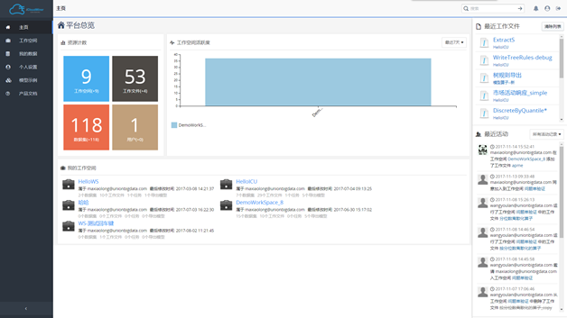

主页仪表盘
用户登录以后，默认进到主页界面，其中左侧的功能栏展示了主页、工作空间、我的数据、用户设置、模型示例和产品文档6个部分。功能菜单可通过底部的动态箭头操作键进行收缩或展开，箭头向右表示当前目录是收缩状态（可展开），箭头向左则表示当前目录是展开状态（可收缩）。

正如上图，主页展示了用户个人最近的一些操作等的仪表统计，可以比较清晰的看到最近正在执行的工作内容。
左上角展示了最近新增的核心资源，例如最近新建的工作空间，新建的工作流，新增的伙伴，新添加的数据集；中部有统计各个工作空间的一个活跃度；右上方展示了最近操作过的工作流；左下角列举了自己创建的或加入到的工作空间；右下角是最近的一些活动记录。